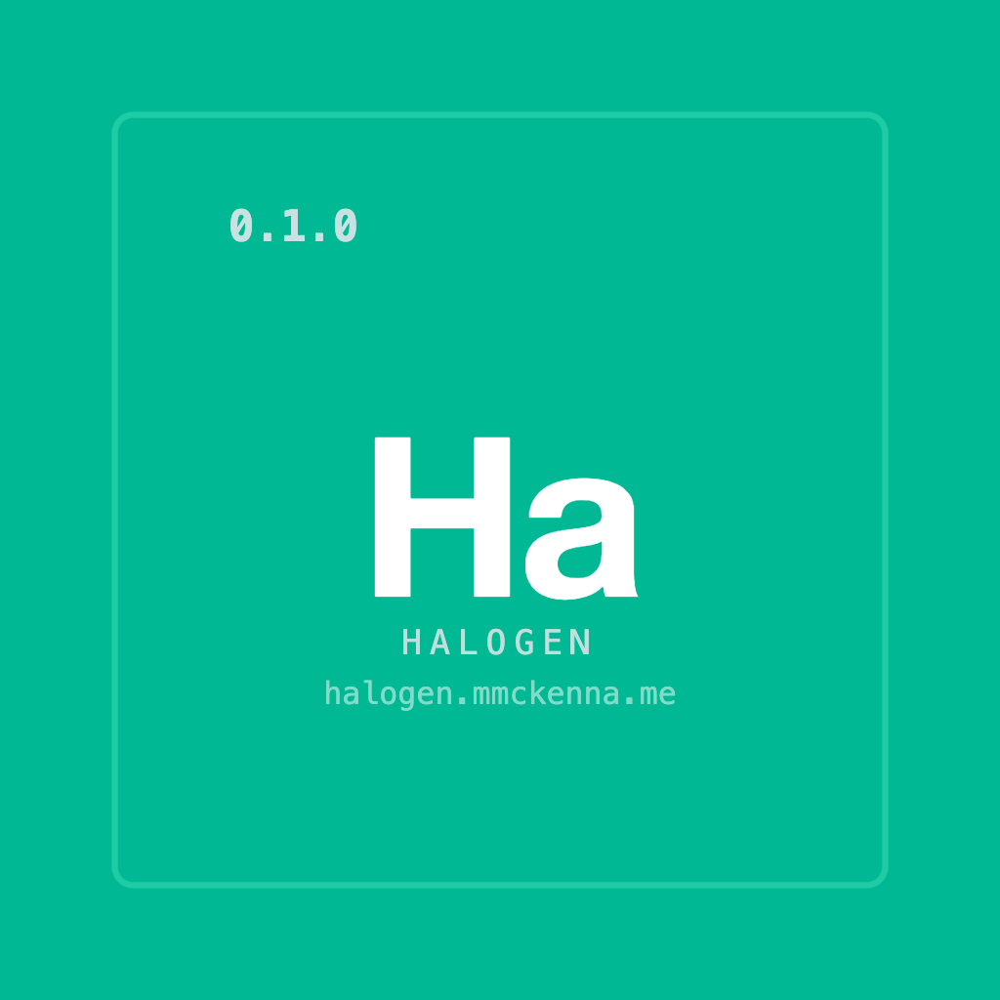

Halogen¶
Runtime theme generation for Compose Multiplatform
Halogen turns natural language into complete Material 3 themes at runtime. Give it a prompt like "warm coffee shop" or "neon cyberpunk" and it generates colors, typography, and shapes, all cached so the LLM only runs once per prompt.
On Android, it can run entirely on-device with Gemini Nano. On iOS, Desktop, and Web, plug in any cloud LLM.
Imagine¶
- A weather app where the entire UI shifts to match the forecast - sunny yellows, stormy grays, sunset gradients
- A community platform where every subreddit, channel, or group gets its own generated look and feel
- A music player that themes itself to the album art or genre - jazz gets warm tones, electronic gets neon
- An e-commerce app where each brand or product category has a distinct visual identity, generated on the fly
- A reading app that adapts its palette to the mood of the content - thriller, romance, sci-fi
Halogen makes all of this possible with a single resolve() call.
Quick Start¶
// 1. Build the engine
val halogen = Halogen.Builder()
.provider(GeminiNanoProvider())
.cache(HalogenCache.memory())
.build()
// 2. Generate a theme
halogen.resolve(key = "coffee", hint = "warm coffee shop vibes")
// 3. Apply it
HalogenTheme { App() }
That's three lines to go from a text prompt to a full Material 3 theme. See the Quick Start guide for setup details.
Installation¶
Most apps need three modules:
implementation("me.mmckenna.halogen:halogen-core:0.2.0")
implementation("me.mmckenna.halogen:halogen-compose:0.2.0")
implementation("me.mmckenna.halogen:halogen-engine:0.2.0")
Then add a provider and optionally a persistent cache:
// Gemini Nano on-device provider (Android only, min SDK 26)
implementation("me.mmckenna.halogen:halogen-provider-nano:0.2.0")
// Room KMP persistent cache (Android, iOS, JVM - not wasmJs)
implementation("me.mmckenna.halogen:halogen-cache-room:0.2.0")
// Image-to-theme color extraction (all platforms)
implementation("me.mmckenna.halogen:halogen-image:0.2.0")
How It Works¶
The LLM generates 6 seed colors + typography/shape hints. Halogen expands those into 49 M3 color roles, 15 text styles, and 5 shape sizes using pure-Kotlin HCT color science. One call produces both light and dark schemes - toggling dark mode is instant, no second LLM call.
resolve("coffee", "warm coffee shop")
→ cache HIT? → return instantly
→ cache MISS? → LLM generates seeds → expand to full M3 theme → cache → apply
Results are cached by key, so the LLM is never called twice for the same prompt.
Configuration Presets¶
Control how seed colors get expanded into palettes:
| Preset | Style |
|---|---|
Default |
Balanced M3 tonal spot - good for most apps |
Vibrant |
Bolder, more saturated |
Muted |
Desaturated, calm |
Monochrome |
Single-hue variations |
Punchy |
High-energy, high-contrast |
Pastel |
Soft and airy |
Editorial |
Strong primary, neutral everything else |
Expressive |
Colorful - even the neutrals are tinted |
All presets are in HalogenConfig.presets if you want to build a UI picker.
Platform Support¶
| Platform | LLM Provider | Persistent Cache |
|---|---|---|
| Android | Gemini Nano (on-device) or cloud | Room |
| iOS | Cloud providers | Room |
| Desktop (JVM) | Cloud providers | Room |
| Web (WasmJs) | Cloud providers | - |
All platforms get in-memory LRU caching and full Compose Material 3 support.
Learn More¶
- Quick Start - Add Halogen to your project
- Use Cases - Ideas and patterns for using Halogen
- Architecture - How the resolve chain, caching, and color science work
- Provider Guide - Implement your own LLM provider
- Custom Extensions - Add custom theme tokens
- Custom Theme Systems - Use Halogen outside Material 3
- API Reference - Full API surface for all modules
- Design Decisions - Why Halogen is built the way it is